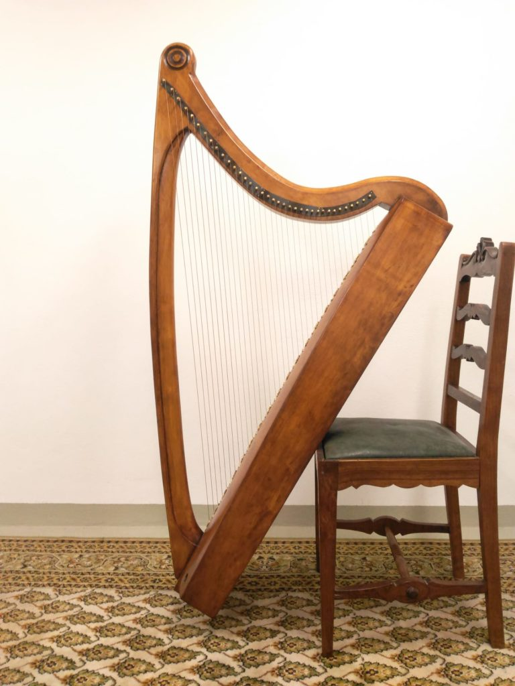
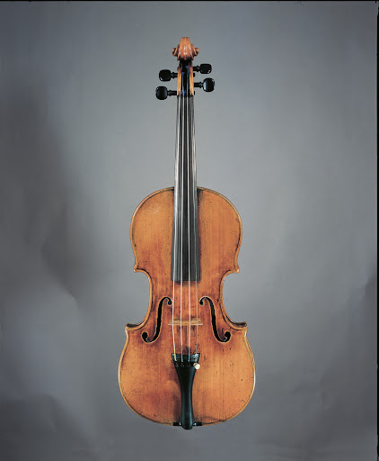
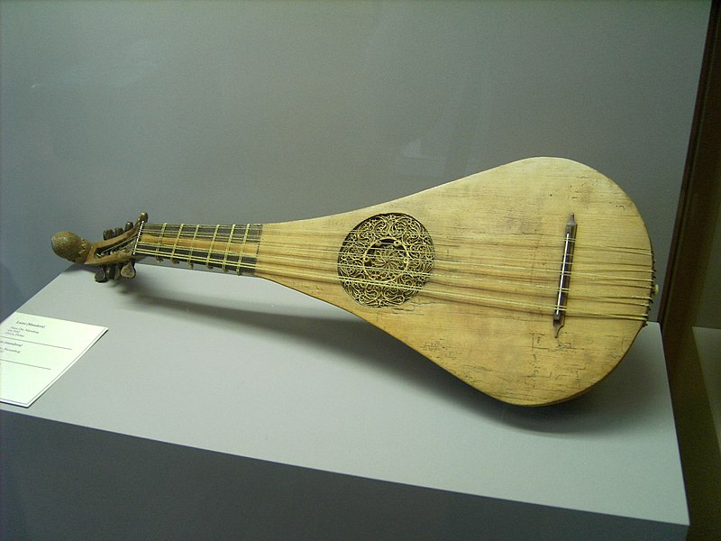
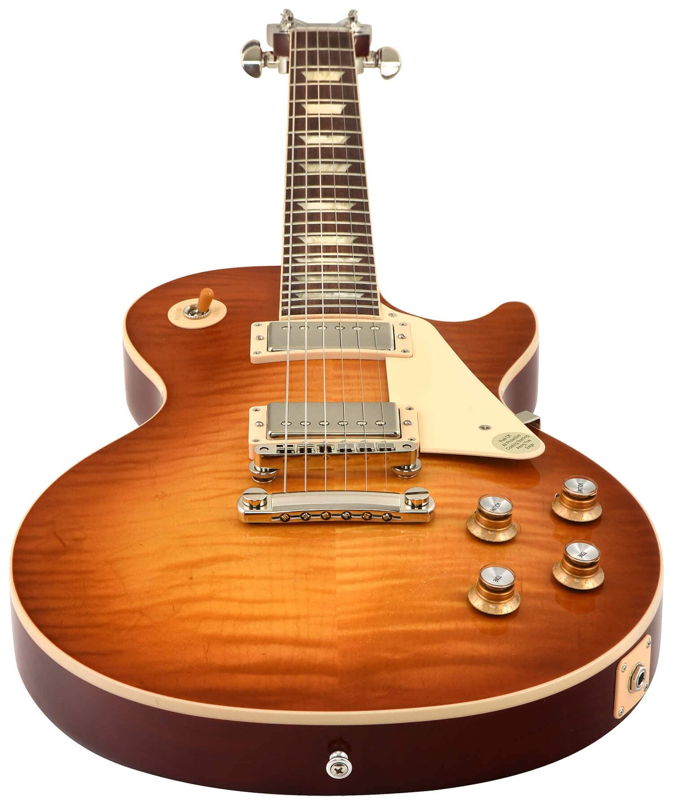

The grace of strings attached to wood.

The first harps are almost 5000 years old.

The notorious Stradivari - violins originated in Italy and was invented by .

The genre of the minnesong heavily relied on the lute.

The electric guitar has often been mistreated by bands like the Who and yet still rocks on.